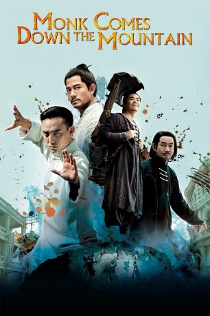
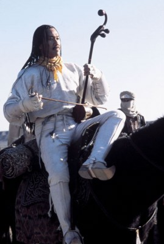

#3742 Monk Comes Down the Mountain
 
 IMDB-Wertung: 5.4 / 10
IMDB-Wertung: 5.4 / 10  Metascore: 0
Metascore: 0 
Based on Xu Haofeng's novel A Monk Comes Down the Mountain, the film relates the story of a listless young Taoist cleric called He Anxia who is ejected from his impoverished monastery and finds himself playing Virgil in an infernal 1930s Chinese city.
Jahr: 2015
Dauer: 113 Minuten
FSK: 12
Land: China Studio: Sony Pictures Home EntertainmentTonspuren: DD5.1 - ,
Untertitel: Deutsch, Englisch,
Auflösung: 1080p (1920x808) Größe: 9287 MB
Genre: Action, Geschichte
Regisseur: Chen Kaige
Drehbuch: Rhett Reese
Soundtrack:
Darsteller:
 Jaycee Chan als Qizi , uncredited
Jaycee Chan als Qizi , uncredited- Aaron Kwok als Zhou Xiyu
- Chen Chang als Boss Zha
- Baoqiang Wang als He Anxia
 Wah Yuen als Peng Qianwu
Wah Yuen als Peng Qianwu- Chiling Lin als Yuzhen
- Tiger Hu Chen als
-  Xueqi Wang als
- Vanness Wu als
- Xuejian Li als
- Zhuangzhuang Tian als
 Suet Lam als
Suet Lam als - Qi Dong als
- Wei Fan als
Datei: X:\HD-Eastern-Modern(A-M)\Monk Comes Down the Mountain (2015, FSK12, 1920x808).mkv seit 30.05.2016
Festplatte: HD Eastern+Western
 Es gibt insgesamt 104 Filme in der Gruppe 'HD-Eastern-Modern(A-M)'
Es gibt insgesamt 104 Filme in der Gruppe 'HD-Eastern-Modern(A-M)'